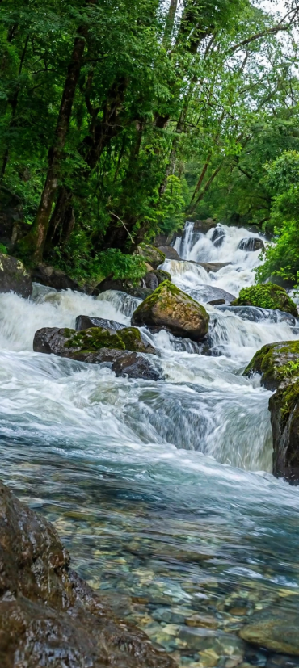
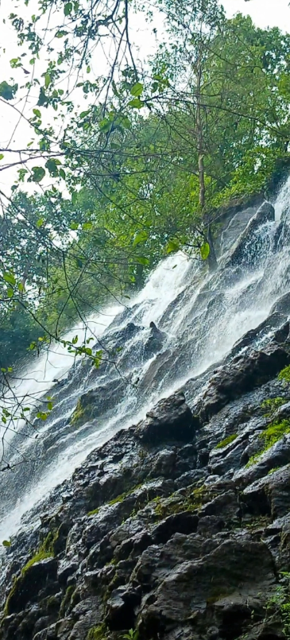

La Cascada Piedra del Molino es un lugar muy bonito de Valle de Bravo.

Ubicación Se encuentra en Avándaro, muy cerca del centro de Valle de Bravo. Para llegar se camina por un sendero rodeado de árboles, y en el camino se escuchan los pájaros y el sonido del agua.

Tiene agua limpia y cristalina que baja entre las piedras, está rodeada de pinos y mucha vegetación, es un lugar ideal para tomar fotos y respirar aire puro.Se siente mucha paz y se puede pasar un rato con la familia, es perfecto para visitar en un día soleado con amigos.